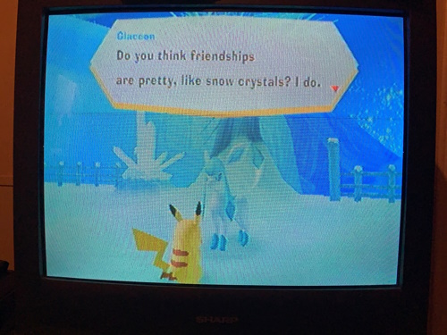
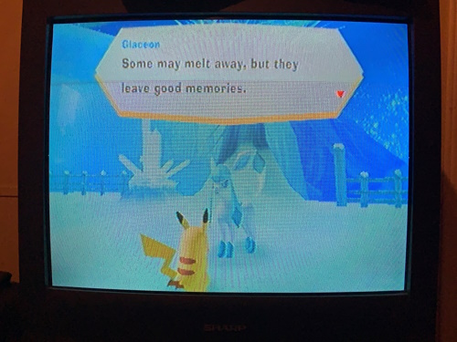
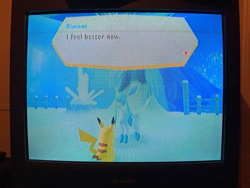

work has been really frustrating me lately. for multiple reasons, but the main one being literally just one of my coworkers. unfortunately, she happens to be the one person that's been working there the longest and isn't likely to budge any time soon. not that i want anyone to lose their job or anything! i just- aghhh!!!
this is my first ever job, at age 22. it's kind of pathetic in terms of human society, but it took me a really, really long time of suffering and hell to get to a point where i'm even able to do this. and if my meds ever wear off i'm totally fucked. as a result though, i have no idea how to manage work conflicts at all. the other day, she told me that if i "wasn't able to do [task i didn't complete because she told me to stop early] that was a serious problem" and basically that i was creating a bunch of problems for everyone else by existing this way, and i can't tell if i'm right or wrong for being frustrated at being told that as a disabled person. i can't do everything, especially physical labor, to the same degree that a perfectly able-bodied person can, but i still fucking try to not do a complete shit job. and i've been doing this same level of work since i started but i was never told it was an issue, and suddenly i'm being treated like complete shit for it now?
it took all of my strength mid triggered breakdown to not say something like, sorry i forgot i didn't tell you i spent 2 years trying to get disability to listen to me and they didn't so that's why i'm here. or like, sorry i fooled you into thinking i was slightly normal but it took me 10 years to get here. this coworker is the oldest person at my work, and also has a ton of kids. she definitely fits the "passive aggressive mom" vibe and it took me 3 months to realize that was exactly why she was getting under my skin and legit scaring me for multiple months. and it's not like she doesn't know, because this is the second time she's made me have a sob fit. annoyingly.
despite this, they've been cutting my hours for months anyway. i don't even go back to work until wednesday (6 days from now) and i only have a whopping 8 hours next week, yaaaay. ugh. i hate being autistic, because i can't tell if they hate me or something, or i'm doing something wrong. if i was, i wish they would just tell me exactly what it was without being passive aggressive. and if they're going to fire me, i wish they would just tell me. i don't understand why people can't be direct without also being a bitch about it and making me feel totally incompetent.
[part name redacted] has been saying he'll put in our 2 weeks for a few days now, but i really don't want to be left without a job. i have more control over my life than i ever have before and i don't really want that to be cut off from me. and i feel like it's moreso my problem for not being able to handle being told something like that. but apparently i'm the one acting wrong for feeling that way? i don't know. part of me also feels like i don't deserve this job, like i dared to step into human society and this is the rug finally being pulled out from under me.
i'm really not made for this sort of thing. i don't know what to do, i'm tired. that's all i've got.
i can tell that i'm stressed for reasons beyond work because i've consistently been up to these hours again, although luckily my sleep schedule hasn't completley reverted. we're starting to get into the rough of it, so i'm not looking forward to it.
uh, well, something positive to end this negative entry... because i got my wii set up yesterday, i got to play pokepark wii for the first time since i was a tiny kid. amnesia completely took this game from me for years and years even after i found the disc, and i don't remember playing it much still, but i knew it was something special so it's lucky that it didn't get trashed with a lot of my other childhood things. it was strange but fun to revisit. here's some glaceons.
  